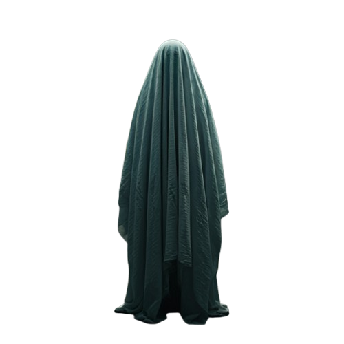

Bem-vindo à Casa Assombrada Digital!
Quiz de Halloween
Curiosidades sobre o Halloween
- A origem do "Trick or Treat"
- A lenda de Jack-o'-lantern
- O significado do Samhain
- Curiosidades sobre monstros famosos
Encontre o fantasma

Músicas de Halloween
-
Thriller - Michael Jackson
-
Ghostbusters - Ray Parker Jr.
-
Monster Mash - Bobby "Boris" Pickett
-
Somebody's Watching Me - Rockwell